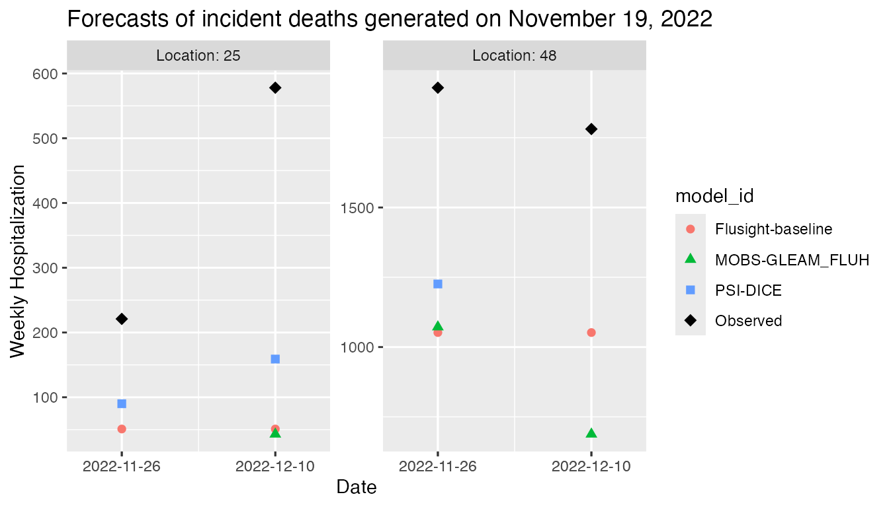
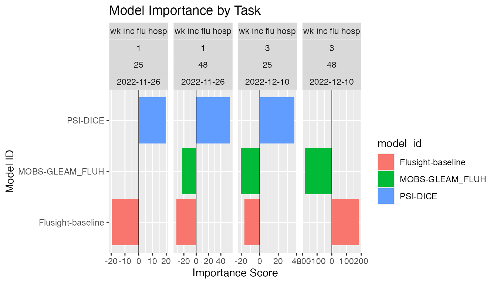

Simple working examples
get-started.RmdThis vignette demonstrates the usage of the
modelimportance package for evaluating how each component
model contributes to ensemble accuracy. We provide simple working
examples to help you get started with the package. Detailed descriptions
of the model importance metrics, algorithms, key functions, and in-depth
interpretations of the examples covered here are available in the accompanying article
titled ‘modelimportance: Evaluating model importance within
a multi-model ensemble in R’ under Articles.
Setup
We first load the necessary packages.
We use some example forecast and target data from the
hubExamples package, which provides sample datasets for
multiple modeling hubs in the hubverse format.
Example data
The forecast data used here contains forecasts of weekly incident
influenza hospitalizations in the US for Massachusetts (FIPS code 25)
and Texas (FIPS code 48), generated on November 19, 2022. These
forecasts are made for two target end dates, November 26, 2022 (horizon
1), and December 10, 2022 (horizon 3), and were produced by three
models: ‘Flusight-baseline’, ‘MOBS-GLEAM_FLUH’, and ‘PSI-DICE’. The
output type is median and the output_type_id
column has NAs as no further specification is required for
this output type. We have modified the example data slightly by removing
some forecasts to demonstrate the handling of missing values. Therefore,
MOBS-GLEAM_FLUH’s forecast for Massachusetts on November 26, 2022, and
PSI-DICE’s forecast for Texas on December 10, 2022, are missing.
# Load the forecast data from hubExamples
forecast_data_raw <- hubExamples::forecast_outputs |>
dplyr::filter(
.data$output_type %in% c("median"),
.data$target_end_date %in% as.Date(c("2022-11-26", "2022-12-10"))
)
# Specify forecasts to remove: MOBS-GLEAM_FLUH for location 25 on 2022-11-26,
# PSI-DICE for location 48 on 2022-12-10
forecast_to_remove <- tibble(
model_id = c("MOBS-GLEAM_FLUH", "PSI-DICE"),
location = c("25", "48"),
target_end_date = as.Date(c("2022-11-26", "2022-12-10"))
)
# Filter out the specified forecasts from the original data
forecast_data <- forecast_data_raw |>
anti_join(forecast_to_remove, by = c("model_id", "location", "target_end_date"))
# Display the forecast data
forecast_data
#> # A tibble: 10 × 9
#> model_id reference_date target horizon location target_end_date output_type output_type_id value
#> <chr> <date> <chr> <int> <chr> <date> <chr> <chr> <dbl>
#> 1 Flusight-baseline 2022-11-19 wk inc flu hosp 1 25 2022-11-26 median NA 51
#> 2 Flusight-baseline 2022-11-19 wk inc flu hosp 3 25 2022-12-10 median NA 51
#> 3 Flusight-baseline 2022-11-19 wk inc flu hosp 1 48 2022-11-26 median NA 1052
#> 4 Flusight-baseline 2022-11-19 wk inc flu hosp 3 48 2022-12-10 median NA 1052
#> 5 MOBS-GLEAM_FLUH 2022-11-19 wk inc flu hosp 3 25 2022-12-10 median NA 43
#> 6 MOBS-GLEAM_FLUH 2022-11-19 wk inc flu hosp 1 48 2022-11-26 median NA 1072
#> 7 MOBS-GLEAM_FLUH 2022-11-19 wk inc flu hosp 3 48 2022-12-10 median NA 688
#> 8 PSI-DICE 2022-11-19 wk inc flu hosp 1 25 2022-11-26 median NA 90
#> 9 PSI-DICE 2022-11-19 wk inc flu hosp 3 25 2022-12-10 median NA 159
#> 10 PSI-DICE 2022-11-19 wk inc flu hosp 1 48 2022-11-26 median NA 1226The corresponding target data contains the observed hospitalization counts for these dates and locations.
target_data <- hubExamples::forecast_target_ts |>
dplyr::filter(
target_end_date %in% unique(forecast_data$target_end_date),
location %in% unique(forecast_data$location),
target == "wk inc flu hosp"
) |>
# Rename columns to match the oracle output format
rename(oracle_value = observation)
target_data
#> # A tibble: 4 × 4
#> target_end_date target location oracle_value
#> <date> <chr> <chr> <dbl>
#> 1 2022-11-26 wk inc flu hosp 25 221
#> 2 2022-11-26 wk inc flu hosp 48 1929
#> 3 2022-12-10 wk inc flu hosp 25 578
#> 4 2022-12-10 wk inc flu hosp 48 1781We plot the point (median) forecasts and the observed values to visualize the difference in forecast errors.

When comparing the ground truth data and model predictions, we can see that forecasts for December 10, 2022 show larger deviations from the observed values compared to those for November 26, 2022. Thus, as we expect, prediction errors increase at longer horizons due to greater uncertainty. Additionally, the forecasts for Massachusetts are relatively more accurate compared to those for Texas, which tend to have higher errors.
Evaluation using LOMO algorithm
We quantify the contribution of each model within the ensemble using
the model_importance() function. The following code
evaluates the importance of each ensemble member in the simple mean
ensemble using the LOMO algorithm.
scores_lomo <- model_importance(
forecast_data = forecast_data,
oracle_output_data = target_data,
ensemble_fun = "simple_ensemble",
importance_algorithm = "lomo"
)
print(scores_lomo)
#> Model importance result by task
#> ---------------------------------
#> model_id reference_date target horizon location target_end_date output_type importance
#> 1 Flusight-baseline 2022-11-19 wk inc flu hosp 1 25 2022-11-26 median -19.50000
#> 2 MOBS-GLEAM_FLUH 2022-11-19 wk inc flu hosp 1 25 2022-11-26 median NA
#> 3 PSI-DICE 2022-11-19 wk inc flu hosp 1 25 2022-11-26 median 19.50000
#> 4 Flusight-baseline 2022-11-19 wk inc flu hosp 1 48 2022-11-26 median -32.33333
#> 5 MOBS-GLEAM_FLUH 2022-11-19 wk inc flu hosp 1 48 2022-11-26 median -22.33333
#> 6 PSI-DICE 2022-11-19 wk inc flu hosp 1 48 2022-11-26 median 54.66667
#> 7 Flusight-baseline 2022-11-19 wk inc flu hosp 3 25 2022-12-10 median -16.66667
#> 8 MOBS-GLEAM_FLUH 2022-11-19 wk inc flu hosp 3 25 2022-12-10 median -20.66667
#> 9 PSI-DICE 2022-11-19 wk inc flu hosp 3 25 2022-12-10 median 37.33333
#> 10 Flusight-baseline 2022-11-19 wk inc flu hosp 3 48 2022-12-10 median 182.00000
#> 11 MOBS-GLEAM_FLUH 2022-11-19 wk inc flu hosp 3 48 2022-12-10 median -182.00000
#> 12 PSI-DICE 2022-11-19 wk inc flu hosp 3 48 2022-12-10 median NAFor models that missed forecasts for certain tasks, NA
values were assigned in the importance column for those tasks.
Calling summary() shows that three models were used and
four tasks were evaluated, along with a preview of the top-performing
model for each task.
summary(scores_lomo)
#> === Summary of importance scores by task ===
#> Number of models: 3
#> Number of tasks: 4
#>
#> === Top scoring model by task for a subset of tasks ========================================
#> target horizon location target_end_date top_model importance
#> wk inc flu hosp 1 25 2022-11-26 PSI-DICE 19.50
#> wk inc flu hosp 1 48 2022-11-26 PSI-DICE 54.67
#> wk inc flu hosp 3 25 2022-12-10 PSI-DICE 37.33
#> --------------------------------------------
#> * More details are available in the summary object (e.g., $all_tasks, $model_summary, $task_winners).As indicated in the output, more details about the summary are available through the summary object’s elements as follows.
s <- summary(scores_lomo)
s$all_tasks
#> target horizon location target_end_date
#> 1 wk inc flu hosp 1 25 2022-11-26
#> 2 wk inc flu hosp 1 48 2022-11-26
#> 3 wk inc flu hosp 3 25 2022-12-10
#> 4 wk inc flu hosp 3 48 2022-12-10Each row represents a unique combination of task IDs, from which we verify that four different tasks were evaluated.
s$model_summary
#> model_id n_tasks min_importance max_importance n_NA
#> 1 Flusight-baseline 4 -32.33 182.00 0
#> 2 MOBS-GLEAM_FLUH 4 -182.00 -20.67 1
#> 3 PSI-DICE 4 19.50 54.67 1We observe that ‘Flusight-baseline’ submitted forecasts for all four
tasks (n_NA = 0), while ‘MOBS-GLEAM_FLUH’ and ‘PSI-DICE’
submitted forecasts for only three tasks due to one missing forecast
(n_NA = 1). Each model’s importance scores vary across
tasks. ‘Flusight-baseline’ shows the largest range of scores that
includes a negative minimum value and a positive maximum value, while
‘MOBS-GLEAM_FLUH’ and ‘PSI-DICE’ have scores that are all positive or
all negative across the three tasks they submitted forecasts for.
s$task_winners
#> target horizon location target_end_date top_model max_score
#> 1 wk inc flu hosp 1 25 2022-11-26 PSI-DICE 19.50
#> 2 wk inc flu hosp 1 48 2022-11-26 PSI-DICE 54.67
#> 3 wk inc flu hosp 3 25 2022-12-10 PSI-DICE 37.33
#> 4 wk inc flu hosp 3 48 2022-12-10 Flusight-baseline 182.00Models with the highest importance scores for each task are
identified in the top_model column with their importance
score in the max_score column. ‘PSI-DICE’ is the best model
for three out of the four tasks, while ‘Flusight-baseline’ is the best
for the remaining task.
The following example shows a bar plot of importance scores across models and tasks, with panels faceted by combinations of task ID values.

We aggregate the importance scores for each model by averaging across
all tasks. NA values are removed during the averaging
process by setting the na_action argument to
"drop".
aggregate(scores_lomo, by = "model_id", na_action = "drop", fun = mean)
#> Overall model importance across tasks
#> ----------------------------------------
#> # A tibble: 3 × 2
#> model_id importance_score_mean
#> <chr> <dbl>
#> 1 PSI-DICE 37.2
#> 2 Flusight-baseline 28.4
#> 3 MOBS-GLEAM_FLUH -75The results show that, overall, the model ‘PSI-DICE’ has the highest importance score, followed by ‘Flusight-baseline’ and ‘MOBS-GLEAM_FLUH’. That is, ‘PSI-DICE’ contributes the most to improving the ensemble’s predictive performance, whereas ‘MOBS-GLEAM_FLUH’, which has a negative score, detracts from the ensemble’s performance. The low importance score of ‘MOBS-GLEAM_FLUH’ is mainly due to a substantially larger prediction error for Texas on the target end date of December 10, 2022, compared to other models, while its missing forecast for Massachusetts for November 26, 2022, was not factored into the evaluation. This single large error significantly affected its contribution score.
Another approach to handling missing values is to use the
"worst" option for na_action, which replaces
missing values with the worst (i.e., minimum) score among the other
models for the same task.
aggregate(scores_lomo, by = "model_id", na_action = "worst", fun = mean)
#> Overall model importance across tasks
#> ----------------------------------------
#> # A tibble: 3 × 2
#> model_id importance_score_mean
#> <chr> <dbl>
#> 1 Flusight-baseline 28.4
#> 2 PSI-DICE -17.6
#> 3 MOBS-GLEAM_FLUH -61.1It is also possible to impute the missing scores with intermediate values by assigning the average importance scores of other models in the same task. This strategy may offer a more balanced trade-off by mitigating the influence of the missing data without overly penalizing or overlooking them.
aggregate(scores_lomo, by = "model_id", na_action = "average", fun = mean)
#> Overall model importance across tasks
#> ----------------------------------------
#> # A tibble: 3 × 2
#> model_id importance_score_mean
#> <chr> <dbl>
#> 1 Flusight-baseline 28.4
#> 2 PSI-DICE 27.9
#> 3 MOBS-GLEAM_FLUH -56.2Evaluation using LASOMO algorithm
We now demonstrate the use of the LASOMO algorithm for evaluating
model importance. Since we explored the difference of
na_action options in the previous LOMO example above, we
focus on options for subset_wt, which specifies how weights
are assigned to subsets of models when calculating importance scores,
with na_action fixed to "drop".
The following code and corresponding outputs illustrate the evaluation using each weighting scheme.
scores_lasomo_eq <- model_importance(
forecast_data = forecast_data,
oracle_output_data = target_data,
ensemble_fun = "simple_ensemble",
importance_algorithm = "lasomo",
subset_wt = "equal"
)
aggregate(scores_lasomo_eq, by = "model_id", na_action = "drop", fun = mean)
#> Overall model importance across tasks
#> ----------------------------------------
#> # A tibble: 3 × 2
#> model_id importance_score_mean
#> <chr> <dbl>
#> 1 PSI-DICE 47.4
#> 2 Flusight-baseline 24.3
#> 3 MOBS-GLEAM_FLUH -79.8
scores_lasomo_perm <- model_importance(
forecast_data = forecast_data,
oracle_output_data = target_data,
ensemble_fun = "simple_ensemble",
importance_algorithm = "lasomo",
subset_wt = "perm_based"
)
aggregate(scores_lasomo_perm, by = "model_id", na_action = "drop", fun = mean)
#> Overall model importance across tasks
#> ----------------------------------------
#> # A tibble: 3 × 2
#> model_id importance_score_mean
#> <chr> <dbl>
#> 1 PSI-DICE 44.8
#> 2 Flusight-baseline 25.3
#> 3 MOBS-GLEAM_FLUH -78.6In this example, there are only three models (), and the weights do not differ significantly between the two weighting schemes. Therefore, the resulting outputs show little difference. However, in general, with a larger number of models, the two weighting schemes may yield quite different importance scores for each model, as discussed in Comparison of weighting schemes in LASOMO section of the accompanying article.
Note that the computational time here is about 0.3 seconds for both LOMO and LASOMO algorithms. However, this time can be increased substantially with a large number of models and tasks. See detailed discussions on execution time and computational feasibility in the Computational complexity section of the accompanying article.
An extensive application in more complex scenarios with a larger number of models can be found in Kim et al. (2026).